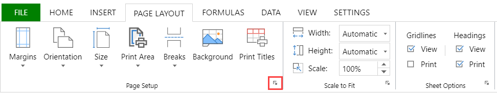

SpreadJS Designer provides a page setup dialog box which helps to set up the layout and print options of a page. Click on the Page Layout tab, then in the Page Setup group, click the bottom right arrow button.

The "Page Setup" dialog contains 4 tabs - Page, Margin, Header/Footer, Sheet. Each tab contains a set of options to help in worksheet print and have been explored below.
This tab provides options such as "Orientation", "Scaling", "Paper size", "Print quality".
| Features | Description |
|---|---|
| Orientation | Set the orientation for printing the sheets. Choose from portrait and landscape. |
| Scaling |
Set the scaling of the print area. You can either adjust the size to be proportional to the normal size, or fit the page accordingly. |
| Paper size | Set the paper size. Choose preferred size from dropdown. |
| Print quality |
Set the quality factor for printing with positive integer between 1 and 8. The greater the quality factor, the better the printing quality. When the quality factor is bigger, the printing efficiency is affected. |
| First page number |
Set the starting page number. The field is set to "Auto" to start the numbering at "1" (if it is the first page of the print) or at the next sequential page. |
This tab provides options such as page preview with measurement input fields for all sides (left, top, footer, etc.) and content position.
| Features | Description |
|---|---|
| Margin preview |
Set margin settings and see the results in the preview box. You can set margins for top, right, bottom, left, header, and footer. |
| Center on page | Set horizontal, vertical, or both, to center the data on the page within the margins. |
This tab provides options such as string formats (page number, title) and creating custom header/footer.
| Features | Description |
|---|---|
| Header |
Set the header format by choosing a built-in header from the dropdown. The built-in header is displayed in preview box above the dropdown. |
| Custom header |
Create a custom header in the new dialog. Various formatting options such as format text, sheet elements, picture are provided to set in left, center, and right sections of the header. |
| Footer |
Set the footer format by choosing a built-in footer from the dropdown. The built-in footer is displayed in preview box above the dropdown. |
| Custom footer |
Create a custom footer in the new dialog. Various formatting options such as format text, sheet elements, picture are provided to set in left, center, and right sections of the footer. |
| Different odd and even pages |
Set the header and footer for odd and even pages differently. Enable this option to access different tabs in the custom header/footer window respectively. If a template format has been selected for the header/footer, then the odd page section also shows the same content by default. |
| Different first page |
Set the header and footer for the first page differently. Enable this option to access different tabs in the custom header/footer window respectively. |
This tab provides options such as print area, print titles, or print any specific elements from the worksheets.
| Features | Description |
|---|---|
| Print area | Specify the range to print. The first value will be used when setting multiple ranges. |
| Print titles |
Set the "Rows to repeat at top" field if you want specific rows as your horizontal title for each page. Set the "Columns to repeat at left" field if you want vertical titles on each page. |
|
Specify what is printed from the worksheet.
|
|
| Page order |
Specify the order in which data is numbered and printed when it does not fit on one page.
|